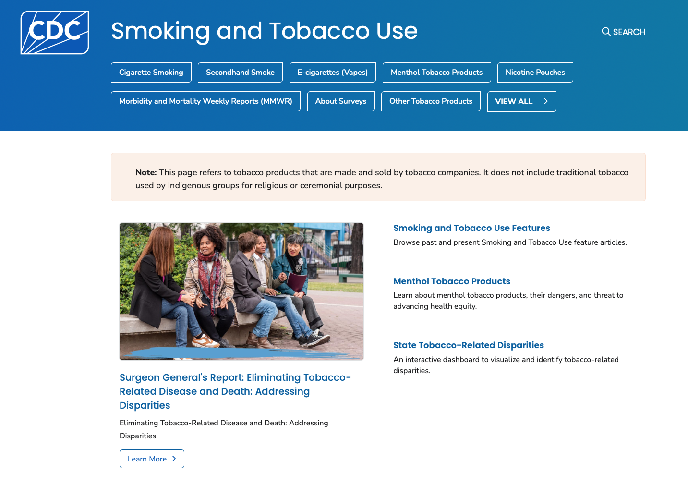

CDC “Clean Slate” & Tobacco Website Redesign — Office on Smoking and Health
Problem
Inconsistent page patterns and complex information architecture made it harder for audiences to find program content and for teams to maintain it.
Solution
- Unified component patterns (headers, intros, CTAs, related content) into modular templates.
- Refined navigation and headings for clarity and accessibility.
- Facilitated cross‑team reviews and documented standards for reuse.
Outcome
- Improved content consistency and scannability across OSH pages.
- Reduced editorial effort for updates and new page builds.